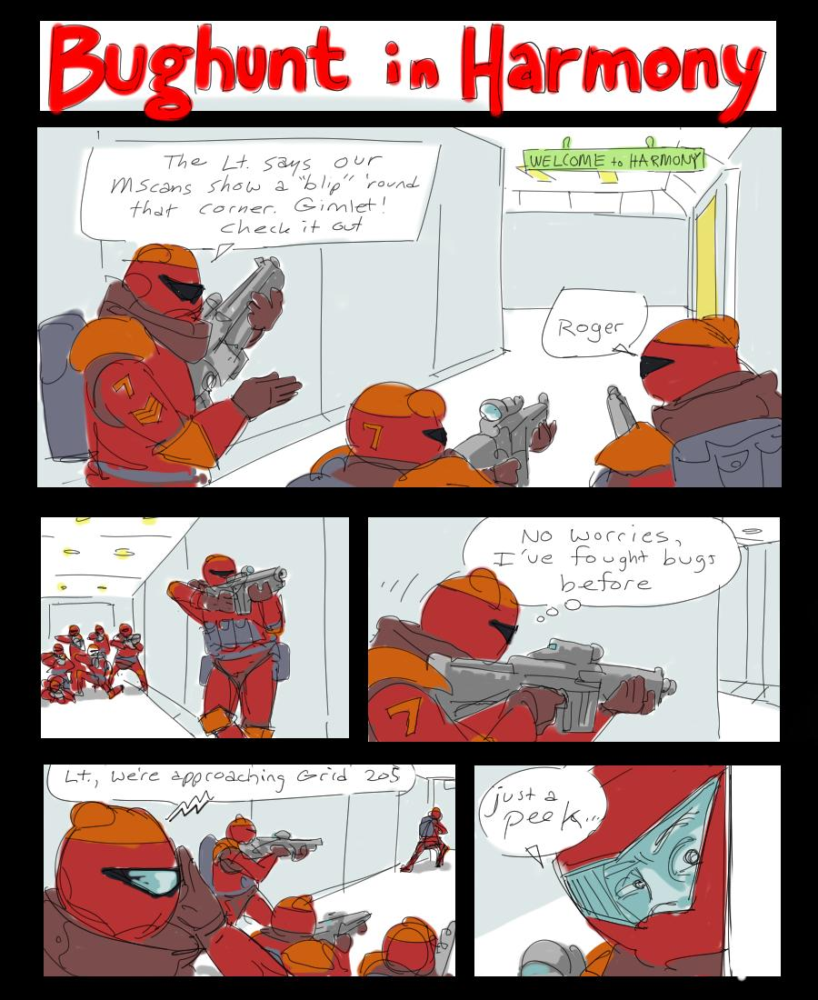

An artistic representation of the action in Bughunter
In my ongoing attempts to spurn accepted wisdom and create a blog with no niche, which is sometimes about non-traditional publishing, sometimes about Islamic Art–or was it the Digital Humanities and Environmental History, or is it just constant Wikipedia meta-criticism–I present this amazing artistic rendition of a game that normally looks like this:
Not nearly as dynamic, dont you think?
View figure at its original source ↗
Not nearly as dynamic, don't you think?
Bughunter is a php-based game based on all the best action movies of the 80s, played by maybe thirty people over the entire course of its history. It’s almost like a digital version of kids games back when all kids didn’t play the same highly-engineered and produced media. Cowboys and Indians must have had countless variants with countless different “magic circle” rules, and Bughunter is just like this. Astounding, once you think about it. The game has been ongoing for a couple years now, in various iterations, and while the gameplay is solid, it really only exists as a playspace for a small subset of a long-standing on-line community. One day, it will disappear, and the digital archivists won’t even know it was around to bemoan its loss. I wonder how many of these games actually exist in the world, and what motivates the people who create and maintain them, as well as the people who play them. Somehow, its substandard graphics and interface (When compared to that created for games that cost millions) don’t seem to bother the handful of people who grumble and mutter, like old AD&D players, “I think we should start a new game of Bughunter” every three or five months. Made for free and never marketed, it contains elements based on whimsy and group consensus, and its longevity reflects that strange dynamic. Unlike traditional games, it never even enters into the cost-analysis aspect of design. But it will also never have an audience of millions, or even thousands or hundreds.
I suppose that somehow my blog maintains its niche, as this is a game that will be played and appreciated by a few, like books that are read and appreciated not by the entire audience of Oprah but by only the smallest nano-percentage of the world-connected population. Deep but not pretentious, these small pieces of media hearken back to an older time, of the creation of games and books that never made it outside their small borough, and no author or designer thought anything of it. Despite the ever-growing sameness of experience across the world, there still exist these smallest of communities and their smallest of projects–emerging, abiding, and then swaying out of existence like a wise man in a village with no ledger. And yet, somehow, they affect us, and not self-consciously with hipster dramatis, and are reflected in our own creation of art, knowledge and techne.
This entry was posted on Saturday, May 2nd, 2009 at 3:03 PM and is filed under Art, Bughunter, Digital Innovation, Games. You can follow any responses to this entry through the RSS 2.0 feed. Both comments and pings are currently closed.